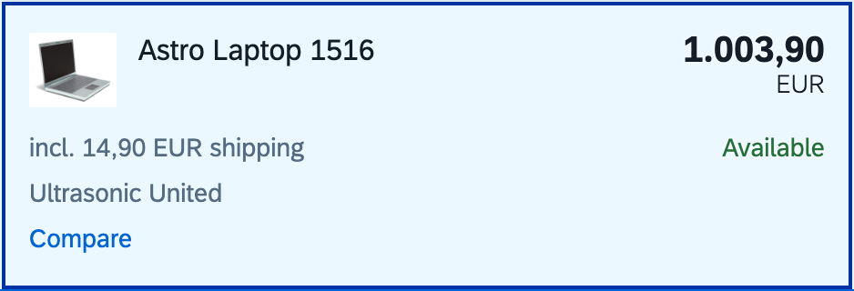
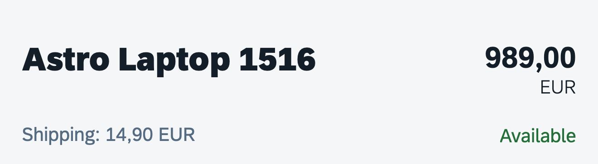

After seeing that the generated rule read prices from the category list, I changed that list to include shipping. The rule kept exporting well-formed prices and its own checks passed; SAP's data showed 11 of 11 laptops wrong. On an older SAP release, unmodified (1.96.0), the same rule stopped with nothing exported. One recorded repair fixed both.

Category list. The first rule reads the price in this row. Here the row shows the price with shipping included: 1.003,90.
{
"product_id": "HT-1251",
"price": "1003.90",
"currency": "EUR",
"availability": "A"
}
Runtime validator: passed. It found one well-formed amount where the rule expects one.

Product page of the same laptop. The product price, 989,00 EUR, with the shipping on its own line.
{ "ProductId": "HT-1251",
"Price": "989", "CurrencyCode": "EUR" }
localService/mockdata/Products.json, OpenUI5 1.154.0. Read by the test bench only.
0 of 11 laptop prices exact. 11 wrong prices exported without a warning.
price.from: item → detailRepair 1, recorded 2026-11-06
Built from the runs the model may see (7 of the 13 scenarios). It holds what the page showed and which records disagreed with SAP's data, never SAP's prices.
SHA-256 d313e95644b858e03bdf9ffae28b04d26e74b2567e034c69647b2eaa2df021ae
Replay rebuilds this report from a fresh run and refuses the recorded repair if one character differs.
Two changes. The rule now reads price, currency and availability on the product page instead of the list row. And it finds list items by their UI5 CSS class (li.sapMLIB) instead of the ARIA role listitem, which 1.96.0 does not use; that holds on the four releases tested but ties the rule to UI5's internal class names.
"target": {- "css": "#container-cart---homeView--categoryList ul[role=list]"+ "css": "#container-cart---homeView--categoryList li.sapMLIB",+ "pick": "first" } ... "within": {- "role": "listitem",+ "css": "li.sapMLIB", "has_text": "{category}", ... "detail_ready": {- "css": "#container-cart---product--page .sapMOHTitle"+ "css": "#container-cart---product--page .sapMOHNumberDiv .sapMObjectNumberText" } ... "price": {- "from": "item",+ "from": "detail", "locator": {- "css": ".sapMObjectNumber .sapMObjectNumberText"+ "css": "#container-cart---product--page .sapMOHNumberDiv .sapMObjectNumber .sapMObjectNumberText" }, ... "currency": {- "from": "item",+ "from": "detail", "locator": {- "css": ".sapMObjectNumber .sapMObjectNumberUnit"+ "css": "#container-cart---product--page .sapMOHNumberDiv .sapMObjectNumber .sapMObjectNumberUnit" }, ... "availability": {- "from": "item",+ "from": "detail", "locator": {- "css": ".sapMObjStatus .sapMObjStatusText"+ "css": "#container-cart---product--page .sapMOHStatus .sapMObjStatus .sapMObjStatusText" },
| Laptop | First rule | Repaired rule | SAP price | |
|---|---|---|---|---|
| Notebook Basic 15HT-1000 | 970,90 | 956,00 | 956,00 | match |
| Notebook Basic 17HT-1001 | 1.263,90 | 1.249,00 | 1.249,00 | match |
| Notebook Basic 18HT-1002 | 1.584,90 | 1.570,00 | 1.570,00 | match |
| Notebook Basic 19HT-1003 | 1.664,90 | 1.650,00 | 1.650,00 | match |
| Notebook Professional 17HT-1011 | 2.313,90 | 2.299,00 | 2.299,00 | match |
| Astro Laptop 1516HT-1251 | 1.003,90 | 989,00 | 989,00 | match |
| Benda Laptop 1408HT-1253 | 990,90 | 976,00 | 976,00 | match |
| ITelO FlexTop I4000HT-8000 | 813,90 | 799,00 | 799,00 | match |
| ITelO FlexTop I6300cHT-8001 | 813,90 | 799,00 | 799,00 | match |
| ITelO FlexTop I9100HT-8002 | 1.208,90 | 1.199,00 | 1.199,00 | match |
| ITelO FlexTop I9800HT-8003 | 1.397,90 | 1.388,00 | 1.388,00 | match |
11 of 11 prices exact, 0 wrong exported.
Each run opens the app in Chromium, follows the rule, then compares every exported price with SAP's data, joined on the product id taken from the URL after the click. Runs marked held out were never shown to the model.
The 12 runs where a price should be exported
The 13th run removes the product price from the screen: both rules hold 11 records for review and export none, as they should.
| App version | First rule | Repaired rule |
|---|---|---|
| OpenUI5 1.154.0Laptops. SAP release, unmodified | 11 of 11 exact | 11 of 11 exact |
| List sorted Z to ALaptops. My change, written before the first rule | 11 of 11 exact | 11 of 11 exact |
| Shipping line in the product headerLaptops. My change, written before the first rule | 11 of 11 exact | 11 of 11 exact |
| Shipping amount above the product headerLaptops. My change, written before the first rule | 11 of 11 exact | 11 of 11 exact |
| Product price removed from screenLaptops. My change, written before the first rule | 11 of 11 held, none exported | 11 of 11 held, none exported |
| List shows price plus shippingLaptops. My change, written after reading it | 0 of 11 exact, 11 wrong exported | 11 of 11 exact |
| OpenUI5 1.96.0Laptops. SAP release, unmodified | 0 of 11: run stopped, nothing exported | 11 of 11 exact |
| OpenUI5 1.154.0 held outMice. SAP release, unmodified | 7 of 7 exact | 7 of 7 exact |
| Shipping amount above the product header held outMice. My change, written before the first rule | 7 of 7 exact | 7 of 7 exact |
| List shows price plus shipping held outMice. My change, written after reading it | 0 of 7 exact, 7 wrong exported | 7 of 7 exact |
| OpenUI5 1.96.0 held outMice. SAP release, unmodified | 0 of 7: run stopped, nothing exported | 7 of 7 exact |
| OpenUI5 1.120.30 held outLaptops. SAP release, unmodified. The engine's click handling was changed after the first rule failed here in an earlier run | 11 of 11 exact | 11 of 11 exact |
| OpenUI5 1.148.0 held outLaptops. SAP release, unmodified | 11 of 11 exact | 11 of 11 exact |
My first shipping changes, written before the rule existed, were on the product page. The first rule reads the price in the list row, so they never reached it. I wrote the list-row change after reading the rule, and that is the change that fooled it. On an older SAP release of the demo, 1.96.0, lists carry the ARIA roles listbox and option instead of list and listitem, so the rule's first wait never ended and nothing was exported. The SAP releases were picked after the first rule: the ones sdk.openui5.org still serves for this demo among those I tried. One more fact about 1.120.30: in an earlier run the first rule failed there, 0 of 11, because the engine clicked a list placeholder before the data arrived; I then changed the engine (wait for the page to settle before each click, retry once a click that did nothing), for every rule alike, and with that engine the same rule passes there.
It flags a missing field, two candidate elements, a value of the wrong type, an item count that disagrees with the counter on screen, and duplicate ids. A flagged record is held for review with no value invented. It cannot tell that a single, well-formed amount is the wrong one.
Only the test bench reads Products.json, never the agent or the extractor. Records are joined on ProductId, the price is compared as a decimal and the currency separately. The repair prompt is told which records disagreed, not the reference values.
Which known-good records does your team use today to accept a rule?
The app runs from a local copy of SAP's files (Apache License 2.0), so repeated runs never touch SAP's servers. The first rule (2026-11-06) and the repair came from claude-opus-5-5 through claude -p on a Claude subscription, with every tool turned off. They are stored with their prompts and hashes; replay calls no model and costs nothing. The rule format is ours: plain JSON with steps, locators by text, role, label or CSS, types and contracts, no code. I do not know your engine's format; mapping one rule to it would be a good first exercise.